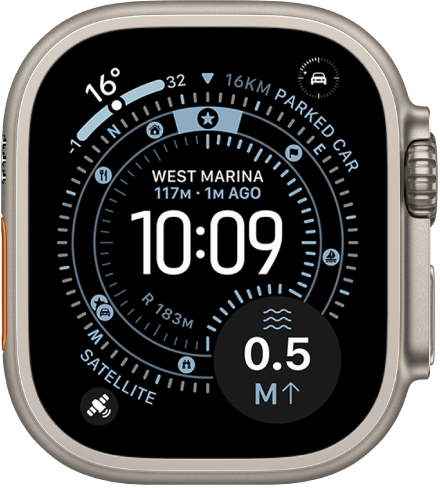

此表盘（在 Apple Watch Ultra 机型上可用）可让你在探索时有方向感。
下方的文件数包括本地化资源。固件名称键能确认包的归属；组件的圆屏点击边界、亮屏过渡与 AOD 对照均待设备验证。
原始包 已解析属性表 Mach-O 方法与成员 ARM64 汇编 解出的图集
.strings × 132 .stringsdict × 88 .plist × 3 .car × 1 无扩展名 × 1
原始包 已解析属性表 Mach-O 方法与成员 ARM64 汇编 解出的图集
.strings × 132 .stringsdict × 88 .plist × 3 .car × 1 无扩展名 × 1
原始包 已解析属性表 Mach-O 方法与成员 ARM64 汇编 解出的图集
.strings × 132 .stringsdict × 88 .plist × 3 .car × 1 无扩展名 × 1
NTKLeghornFaceBundle.bundleFACE_LEGHORN_DESCRIPTIONdesertsandoliveburgundytranslucentBlacktranslucentGraytranslucentKelpdarkUmberleghorn.hero-3leghorn.seasonal-2025-1leghorn.hero-5-duoleghorn.hero-1leghorn.hero-4-duoleghorn.hero-6-duoleghorn.seasonal-2025-3leghorn.hero-2leghorn.seasonal-2025-2EDIT_OPTION_LABEL_LEGHORN_TIME_STYLE_DIGITALEDIT_OPTION_LABEL_LEGHORN_HIVIZ_STYLE_NONEEDIT_OPTION_LABEL_LEGHORN_HIVIZ_STYLE_RIGHTEDIT_MODE_LABEL_LEGHORN_HIVIZ_STYLEEDIT_MODE_LABEL_LEGHORN_TIME_STYLEEDIT_MODE_LABEL_LEGHORN_FILTEREDIT_OPTION_LABEL_LEGHORN_HIVIZ_STYLE_LEFTEDIT_OPTION_LABEL_LEGHORN_TIME_STYLE_ANALOG色组与设备条件 Leghorn-F2026.color.plist Leghorn.color.plist 共享色组与默认值
-[NTKLeghornFaceView tritium_didTransitionToTritiumOn];-[NTKLeghornFaceView tritium_willBeginRenderingFlipbookContent];-[NTKLeghornFaceView tritium_didTransitionToTritiumOff];-[NTKLeghornFaceView tritium_preferredTransitionToOffAnimation];-[NTKLeghornFaceView tritium_usesWidgetTransitionPresetColors];-[NTKLeghornFaceView tritium_createFaceAnimator];-[NTKLeghornFaceView tritium_alwaysOnTimelines];-[NTKLeghornFaceView tritium_transitionToFrameSpecifier:];-[NTKLeghornFaceView _lowPowerModeEnabled];-[NTKLeghornFaceView setTritiumState:];-[NTKLeghornFaceView _updateColorForTritiumWithProgress:];-[NTKLeghornFaceView _updateBezelForTritiumWithProgress:];-[NTKLeghornFaceView _stopObservingLowPowerMode];-[NTKLeghornFaceView _startObservingLowPowerMode];-[NTKLeghornFaceView _tritium_updateComplicationColors];-[NTKLeghornFaceView tritium_shouldApplyOverrideDate];-[NTKLeghornFaceView tritium_willTransitionToTritiumOnToFrameSpecifier:];-[NTKLeghornFaceView tritium_willTransitionToTritiumOffFromFrameSpecifier:];-[NTKLeghornTimeView tritium_didTransitionToTritiumOn];-[NTKLeghornTimeView tritium_didTransitionToTritiumOff];-[NTKLeghornTimeView tritium_transitionToTritiumOnWithProgress:];-[NTKLeghornTimeView tritium_alwaysOnTimelines];-[NTKLeghornTimeView tritium_transitionToFrameSpecifier:];-[NTKLeghornTimeView setTritiumState:];-[NTKLeghornTimeView tritium_transitionToTritiumOffWithProgress:];-[NTKLeghornTimeView tritium_willTransitionToTritiumOnToFrameSpecifier:];-[NTKLeghornTimeView tritium_willTransitionToTritiumOffFromFrameSpecifier:];-[NTKLeghornTimeView tritium_animationToCurrentDateFromFrameSpecifier:];-[NTKLeghornCircularDataSource seconds];-[NTKLeghornFaceColorPalette minuteHandInlayColor];-[NTKLeghornFaceColorPalette secondaryBackgroundColor];-[NTKLeghornFaceColorPalette compassMajorTickColor];-[NTKLeghornFaceColorPalette compassMedialTickColor];-[NTKLeghornFaceColorPalette compassMinorTickColor];-[NTKLeghornFaceColorPalette minuteHandStrokeColor];-[NTKLeghornFaceColorPalette secondsCompassRingColor];-[NTKLeghornFaceColorPalette secondsInactiveMajorTickColor];-[NTKLeghornFaceColorPalette secondsInactiveMinorTickColor];-[NTKLeghornFaceColorPalette secondsMajorTickColor];-[NTKLeghornFaceColorPalette secondsMinorTickColor];-[NTKLeghornFaceColorPalette waypointLabelSecondaryColor];-[NTKLeghornPickerDelegate pickerView:transitionFraction:fromSelectedValue:toSelectedValue:];-[NTKLeghornCircularDataSource seconds];-[NTKLeghornCircularDataSource setSeconds:];-[NTKLeghornCylindricalPickerView selectItemAtIndex:animated:];-[NTKLeghornFaceColorPalette secondaryColor];-[NTKLeghornFaceColorPalette minuteHandInlayColor];-[NTKLeghornFaceColorPalette secondaryBackgroundColor];-[NTKLeghornFaceColorPalette compassMajorTickColor];-[NTKLeghornFaceColorPalette compassMedialTickColor];-[NTKLeghornFaceColorPalette compassMinorTickColor];-[NTKLeghornFaceColorPalette minuteHandStrokeColor];-[NTKLeghornFaceColorPalette secondsCompassRingColor];-[NTKLeghornFaceColorPalette secondsInactiveMajorTickColor];-[NTKLeghornFaceColorPalette secondsInactiveMinorTickColor];-[NTKLeghornFaceColorPalette secondsMajorTickColor];-[NTKLeghornFaceColorPalette secondsMinorTickColor];-[NTKLeghornFaceColorPalette waypointLabelSecondaryColor];-[NTKLeghornFaceView tritium_didTransitionToTritiumOn];-[NTKLeghornFaceView tritium_didTransitionToTritiumOff];-[NTKLeghornFaceView tritium_preferredTransitionToOffAnimation];-[NTKLeghornFaceView tritium_usesWidgetTransitionPresetColors];-[NTKLeghornFaceView _applyTransitionFraction:fromOption:toOption:forCustomEditMode:slot:];-[NTKLeghornFaceView tritium_createFaceAnimator];-[NTKLeghornFaceView tritium_alwaysOnTimelines];-[NTKLeghornFaceView tritium_transitionToFrameSpecifier:];-[NTKLeghornFaceView _applyTransitionFraction:fromNightMode:toNightMode:];-[NTKLeghornFaceView _applyTransitionFraction:fromColor:toColor:];-[NTKLeghornFaceView _cancelNightModeAnimation];-[NTKLeghornFaceView _configureForTransitionFraction:fromEditMode:toEditMode:];-[NTKLeghornFaceView _nightModeInterpolator];-[NTKLeghornFaceView tritium_willTransitionToTritiumOnToFrameSpecifier:];-[NTKLeghornFaceView tritium_willTransitionToTritiumOffFromFrameSpecifier:];-[NTKLeghornFaceView _applyTransitionFraction:fromLiveDisplayMode:toLiveDisplayMode:];-[NTKLeghornFaceView _applyComplicationsAlphaForTransitionFraction:fromHiVizStyle:toHiVizStyle:editMode:];-[NTKLeghornFaceView _applyComplicationsAlphaForTransitionFraction:fromHiVizStyle:toHiVizStyle:liveDisplayModeFraction:fromLiveDisplayMode:toLiveDisplayMode:editMode:];-[NTKLeghornFaceView _applyComplicationsAlphaForTransitionFraction:fromLiveDisplayMode:toLiveDisplayMode:];-[NTKLeghornFaceView _applyHiVizStyleTransitionFraction:fromDisplayMode:toDisplayMode:editMode:];-[NTKLeghornFaceView _applyTransitionFraction:fromHiVizStyle:toHiVizStyle:editMode:];-[NTKLeghornFaceView _tearDownPickerAnimated:];-[NTKLeghornFaceView _tearDownPickerToDisplayMode:animated:];-[NTKLeghornFaceView _transitionFromLiveDisplayMode:toLiveDisplayMode:animated:applier:completion:];-[NTKLeghornFaceView pickerView:transitionFraction:fromSelectedValue:toSelectedValue:];-[NTKLeghornHandsView minuteHandConfiguration];-[NTKLeghornHandsView createSecondHandView];-[NTKLeghornPickerView setSelectedValue:animated:];-[NTKLeghornTimeView tritium_didTransitionToTritiumOn];-[NTKLeghornTimeView tritium_didTransitionToTritiumOff];-[NTKLeghornTimeView tritium_transitionToTritiumOnWithProgress:];-[NTKLeghornTimeView tritium_alwaysOnTimelines];-[NTKLeghornTimeView applyTransitionFraction:fromStyle:toStyle:];-[NTKLeghornTimeView tritium_transitionToFrameSpecifier:];-[NTKLeghornTimeView tritium_transitionToTritiumOffWithProgress:];-[NTKLeghornTimeView setOverrideDate:duration:];-[NTKLeghornTimeView tritium_willTransitionToTritiumOnToFrameSpecifier:];-[NTKLeghornTimeView tritium_willTransitionToTritiumOffFromFrameSpecifier:];-[NTKLeghornTimeView setShouldUpdateEverySecondInAlwaysOn:];-[NTKLeghornTimeView shouldUpdateEverySecondInAlwaysOn];-[NTKLeghornTimeView tritium_animationToCurrentDateFromFrameSpecifier:];-[NTKLeghornFaceColorPalette minuteHandInlayColor];-[NTKLeghornFaceColorPalette secondaryBackgroundColor];-[NTKLeghornFaceColorPalette hourHandInlayColor];-[NTKLeghornFaceColorPalette isFullScreen];-[NTKLeghornFaceColorPalette hourHandStrokeColor];-[NTKLeghornFaceColorPalette primaryBackgroundColor];-[NTKLeghornFaceColorPalette buttonBackgroundColor];-[NTKLeghornFaceColorPalette pickerItemColor];-[NTKLeghornFaceColorPalette buttonSymbolColor];-[NTKLeghornFaceColorPalette compassCardinalColor];-[NTKLeghornFaceColorPalette compassMajorTickColor];-[NTKLeghornFaceColorPalette compassMedialTickColor];-[NTKLeghornFaceColorPalette compassMinorTickColor];-[NTKLeghornFaceColorPalette compassNorthColor];-[NTKLeghornFaceColorPalette compassOrientingArrowColor];-[NTKLeghornFaceColorPalette minuteHandStrokeColor];-[NTKLeghornFaceColorPalette pickerTitleColor];-[NTKLeghornFaceColorPalette quaternaryBackgroundColor];-[NTKLeghornFaceColorPalette radiusLabelColor];-[NTKLeghornFaceColorPalette secondsCompassRingColor];-[NTKLeghornFaceColorPalette secondsInactiveMajorTickColor];-[NTKLeghornFaceColorPalette secondsInactiveMinorTickColor];-[NTKLeghornFaceColorPalette secondsMajorTickColor];-[NTKLeghornFaceColorPalette secondsMinorTickColor];-[NTKLeghornFaceColorPalette tertiaryBackgroundColor];-[NTKLeghornFaceColorPalette waypointActiveConeColor];-[NTKLeghornFaceColorPalette waypointAheadColor];-[NTKLeghornFaceColorPalette waypointColor];-[NTKLeghornFaceColorPalette waypointInactiveConeColor];-[NTKLeghornFaceColorPalette waypointLabelPrimaryColor];-[NTKLeghornFaceColorPalette waypointLabelSecondaryColor];-[NTKLeghornFaceColorPalette waypointLabelTertiaryColor];-[NTKLeghornFaceColorPalette waypointOutOfRangeColor];-[NTKLeghornFaceColorPalette waypointRingColor];-[NTKLeghornFaceColorPalette waypointTargetRingColor];-[NTKLeghornPOI fillColor];-[NTKLeghornPOI labelColor];-[NTKLeghornPOI glyphColor];-[NTKLeghornButton buttonColor];-[NTKLeghornButton layoutSubviews];-[NTKLeghornButton symbolColor];-[NTKLeghornButton setButtonColor:];-[NTKLeghornButton setSymbolColor:];-[NTKLeghornButton _applySymbolImage:symbolColor:tintColor:enabled:];-[NTKLeghornButton _setSymbolColor:enabled:];-[NTKLeghornCylindricalPickerView setPalette:];-[NTKLeghornCylindricalPickerView layoutSubviews];-[NTKLeghornCylindricalPickerView layout];-[NTKLeghornCylindricalPickerView setLayout:];-[NTKLeghornCylindricalPickerView _assignPaletteToCells];+[NTKLeghornFace _initialDefaultComplicationForSlot:forDevice:];+[NTKLeghornFace _complicationSlotDescriptors];+[NTKLeghornFace _richComplicationSlotsForDevice:];+[NTKLeghornFace _orderedComplicationSlots];+[NTKLeghornFace _defaultSelectedComplicationSlotForDevice:];+[NTKLeghornFace _complicationFontStyleForSlot:];+[NTKLeghornFace complicationSlots];+[NTKLeghornFace _alpineInitialDefaultComplicationForSlot:forDevice:];+[NTKLeghornFace _applyInitialDefaultComplicationsForFace:forDevice:];-[NTKLeghornFace curatedGalleryBackgroundColors];-[NTKLeghornFace complicationsColorRenderingUsage];-[NTKLeghornFace _localizedNameForComplicationSlot:];-[NTKLeghornFace _numberOfOptionsForCustomEditMode:slot:];-[NTKLeghornFace _defaultOptionForCustomEditMode:slot:];-[NTKLeghornFace _indexOfOption:forCustomEditMode:slot:];-[NTKLeghornFace _noteOptionChangedFrom:to:forCustomEditMode:slot:];-[NTKLeghornFace _optionAtIndex:forCustomEditMode:slot:];-[NTKLeghornFace allVisibleComplicationsForCurrentConfiguration];-[NTKLeghornFaceBundle _galleryBottomLeftComplicationForFace:device:];+[NTKLeghornFaceColorPalette _colorFromColorSetColor:fallbackBackgroundColor:backgroundMultiple:fallbackRootColor:rootMultiplier:];-[NTKLeghornFaceColorPalette swatchImageForSize:];-[NTKLeghornFaceColorPalette secondaryColor];-[NTKLeghornFaceColorPalette _isFullScreen];-[NTKLeghornFaceColorPalette minuteHandInlayColor];-[NTKLeghornFaceColorPalette secondaryBackgroundColor];-[NTKLeghornFaceColorPalette hourHandInlayColor];-[NTKLeghornFaceColorPalette isFullScreen];-[NTKLeghornFaceColorPalette hourHandStrokeColor];-[NTKLeghornFaceColorPalette primaryBackgroundColor];-[NTKLeghornFaceColorPalette buttonBackgroundColor];-[NTKLeghornFaceColorPalette _proxyPalette];-[NTKLeghornFaceColorPalette background_night];-[NTKLeghornFaceColorPalette pickerItemColor];-[NTKLeghornFaceColorPalette _canonicalMultiColorPalette];-[NTKLeghornFaceColorPalette _isDuo];-[NTKLeghornFaceColorPalette buttonSymbolColor];-[NTKLeghornFaceColorPalette compassCardinalColor];-[NTKLeghornFaceColorPalette compassMajorTickColor];-[NTKLeghornFaceColorPalette compassMedialTickColor];-[NTKLeghornFaceColorPalette compassMinorTickColor];-[NTKLeghornFaceColorPalette compassNorthColor];-[NTKLeghornFaceColorPalette compassOrientingArrowColor];-[NTKLeghornFaceColorPalette minuteHandStrokeColor];-[NTKLeghornFaceColorPalette pickerTitleColor];-[NTKLeghornFaceColorPalette quaternaryBackgroundColor];-[NTKLeghornFaceColorPalette radiusLabelColor];-[NTKLeghornFaceColorPalette secondsCompassRingColor];-[NTKLeghornFaceColorPalette secondsInactiveMajorTickColor];-[NTKLeghornFaceColorPalette secondsInactiveMinorTickColor];-[NTKLeghornFaceColorPalette secondsMajorTickColor];-[NTKLeghornFaceColorPalette secondsMinorTickColor];-[NTKLeghornFaceColorPalette tertiaryBackgroundColor];-[NTKLeghornFaceColorPalette waypointActiveConeColor];-[NTKLeghornFaceColorPalette waypointAheadColor];-[NTKLeghornFaceColorPalette waypointColor];-[NTKLeghornFaceColorPalette waypointInactiveConeColor];-[NTKLeghornFaceColorPalette waypointLabelPrimaryColor];-[NTKLeghornFaceColorPalette waypointLabelSecondaryColor];-[NTKLeghornFaceColorPalette waypointLabelTertiaryColor];-[NTKLeghornFaceColorPalette waypointOutOfRangeColor];-[NTKLeghornFaceColorPalette waypointRingColor];-[NTKLeghornFaceColorPalette waypointTargetRingColor];+[NTKLeghornFaceView _applyComplicationsLayoutForDevice:size:fromHiVizStyle:toHiVizStyle:progress:block:];+[NTKLeghornFaceView _isHiVizComplicationSlot:];+[NTKLeghornFaceView _isLowerLeftComplicationSlot:];+[NTKLeghornFaceView _isLowerRightComplicationSlot:];-[NTKLeghornFaceView overrideColorForStatusBar];-[NTKLeghornFaceView _keylineCornerRadiusForComplicationSlot:];-[NTKLeghornFaceView _homeScreenDateLabelColor];-[NTKLeghornFaceView _updateStatusBarColorForNightModeFraction:];-[NTKLeghornFaceView createFaceColorPalette];-[NTKLeghornFaceView _applyComplicationLayoutRuleForDevice:frame:transform:slot:states:];-[NTKLeghornFaceView tritium_usesWidgetTransitionPresetColors];-[NTKLeghornFaceView _applyTransitionFraction:fromOption:toOption:forCustomEditMode:slot:];-[NTKLeghornFaceView _applyBreathingFraction:forCustomEditMode:slot:];-[NTKLeghornFaceView _updateViewColorsWithPalette:];-[NTKLeghornFaceView _filterProviderForSlot:];-[NTKLeghornFaceView _applyPaletteToComplications:];-[NTKLeghornFaceView _alphaForComplicationSlot:inEditOption:ofEditMode:];-[NTKLeghornFaceView _applyOption:forCustomEditMode:slot:];-[NTKLeghornFaceView _prepareForEditing];-[NTKLeghornFaceView _cleanupAfterEditing];-[NTKLeghornFaceView _updateColorForTritiumWithProgress:];-[NTKLeghornFaceView galleryFaceColorPalette];-[NTKLeghornFaceView _keylineStyleForComplicationSlot:];-[NTKLeghornFaceView _updateViewColorsWithMultiPalette];-[NTKLeghornFaceView _fadesComplicationSlot:inEditMode:];-[NTKLeghornFaceView _applyComplicationColor:withPalette:slot:];-[NTKLeghornFaceView _complicationSlotsHiddenByCurrentConfiguration];-[NTKLeghornFaceView _configureComplicationView:forSlot:];-[NTKLeghornFaceView _loadLayoutRules];-[NTKLeghornFaceView _newLegacyViewForComplication:family:slot:];-[NTKLeghornFaceView _applyTransitionFraction:fromColor:toColor:];-[NTKLeghornFaceView _applyComplicationFont:];-[NTKLeghornFaceView _applyComplicationsLayoutForComplicationsEditing];-[NTKLeghornFaceView _relativeKeylineFrameForCustomEditMode:slot:];-[NTKLeghornFaceView _prepareComplicationsForSnapshotting];-[NTKLeghornFaceView _fixLayoutStyle];-[NTKLeghornFaceView _tritium_updateComplicationColors];-[NTKLeghornFaceView _applyMultiPaletteFractions];-[NTKLeghornFaceView _keylineFrameForComplicationSlot:selected:];-[NTKLeghornFaceView _applyRubberBandingFraction:forCustomEditMode:slot:];-[NTKLeghornFaceView _multiPalette];-[NTKLeghornFaceView _faceEditingScrollIndicatorStyleForEditMode:];-[NTKLeghornFaceView _keylineLabelStyleForCustomEditMode:slot:];-[NTKLeghornFaceView _applyComplicationsAlphaForHiVizStyle:editMode:];-[NTKLeghornFaceView _applyComplicationsAlphaForTransitionFraction:fromHiVizStyle:toHiVizStyle:editMode:];-[NTKLeghornFaceView _applyComplicationsAlphaForTransitionFraction:fromHiVizStyle:toHiVizStyle:liveDisplayModeFraction:fromLiveDisplayMode:toLiveDisplayMode:editMode:];-[NTKLeghornFaceView _applyComplicationsAlphaForTransitionFraction:fromLiveDisplayMode:toLiveDisplayMode:];-[NTKLeghornFaceView _applyComplicationsLayoutForHiVizPosition:states:];-[NTKLeghornFaceView _applyComplicationsLayoutFromHiVizStyle:toHiVizStyle:progress:];-[NTKLeghornFaceView _faceEditingScrollIndicatorStyleForPOIFilterView];-[NTKLeghornFaceView _hiVizComplicationContainsPoint:];-[NTKLeghornFaceView _hiVizComplicationStyleForDisplayMode:];-[NTKLeghornFaceView leghornFaceColorPalette];-[NTKLeghornHandsView setPalette:];-[NTKLeghornHandsView _applyPalette];-[NTKLeghornHandsView palette];-[NTKLeghornHandsView _handsViewLayoutConstantsForDevice:];+[NTKLeghornHiVizComplicationStyleEditOption _nameLocalizationKeyForValue:forDevice:];+[NTKLeghornHiVizComplicationStyleEditOption _snapshotKeyForValue:forDevice:];+[NTKLeghornHiVizComplicationStyleEditOption _orderedValuesForDevice:];+[NTKLeghornHiVizComplicationStyleEditOption optionWithHiVizComplicationStyle:forDevice:];-[NTKLeghornHiVizComplicationStyleEditOption localizedName];-[NTKLeghornHiVizComplicationStyleEditOption _valueToFaceBundleStringDict];-[NTKLeghornHiVizComplicationStyleEditOption hiVizStyle];+[NTKLeghornPOIFilterView _imageViewForSFSymbol:symbolPointSize:glyphColor:fillColor:frame:scale:];-[NTKLeghornPOIFilterView _layoutConstantsForDevice:];-[NTKLeghornPOIFilterView _faceEditingScrollIndicatorStyleForDevice:];-[NTKLeghornPOIFilterView _setColorsForCategoryView:enabled:];-[NTKLeghornPOIFilterViewController collectionView:layout:heightForHeaderInSection:];-[NTKLeghornPicayuneView layoutSubviews];-[NTKLeghornPicayuneViewConfiguration setPalette:];-[NTKLeghornPicayuneViewConfiguration palette];-[NTKLeghornPicayuneViewConfiguration digitalLayoutStyle];-[NTKLeghornPicayuneViewConfiguration setDigitalLayoutStyle:];-[NTKLeghornPickerCollectionViewCell layoutSubviews];-[NTKLeghornPickerCollectionViewCell setTextColor:];-[NTKLeghornPickerRadiusValue attributedStringOfSize:andColor:];-[NTKLeghornPickerValue attributedStringOfSize:andColor:];-[NTKLeghornPickerView setPalette:];-[NTKLeghornPickerView layoutSubviews];-[NTKLeghornPickerWaypointValue attributedStringOfSize:andColor:];+[NTKLeghornTimeView drawSnapshotInContext:timeStyle:colorPalette:forDevice:];-[NTKLeghornTimeView setPalette:];-[NTKLeghornTimeView _updateAnalogViewColors];-[NTKLeghornTimeView _updateDigitalViewColors];+[NTKLeghornWaypoint iconImageForSFSymbol:color:];-[NTKLeghornWaypoint fillColor];-[NTKLeghornWaypoint setFillColor:];-[NTKLeghornWaypoint setGlyphColor:];-[NTKLeghornWaypoint labelColor];-[NTKLeghornWaypoint glyphColor];-[NTKLeghornWaypoint setLabelColor:];-[NTKLeghornWaypoint initWithLabelText:labelColor:glyphColor:fillColor:sfSymbolName:location:waypointCategory:];-[NTKLeghornWaypoint initWithLabelText:labelColor:glyphColor:fillColor:sfSymbolName:location:waypointCategory:timestampOfCreation:];-[NTKLeghornWaypoint initWithLabelText:labelColor:sfSymbolName:location:];-[NTKLeghornWaypoint initWithLabelText:labelColor:sfSymbolName:location:timestampOfCreation:];-[NTKLeghornWaypoint initWithLabelText:labelColor:sfSymbolName:location:waypointCategory:];